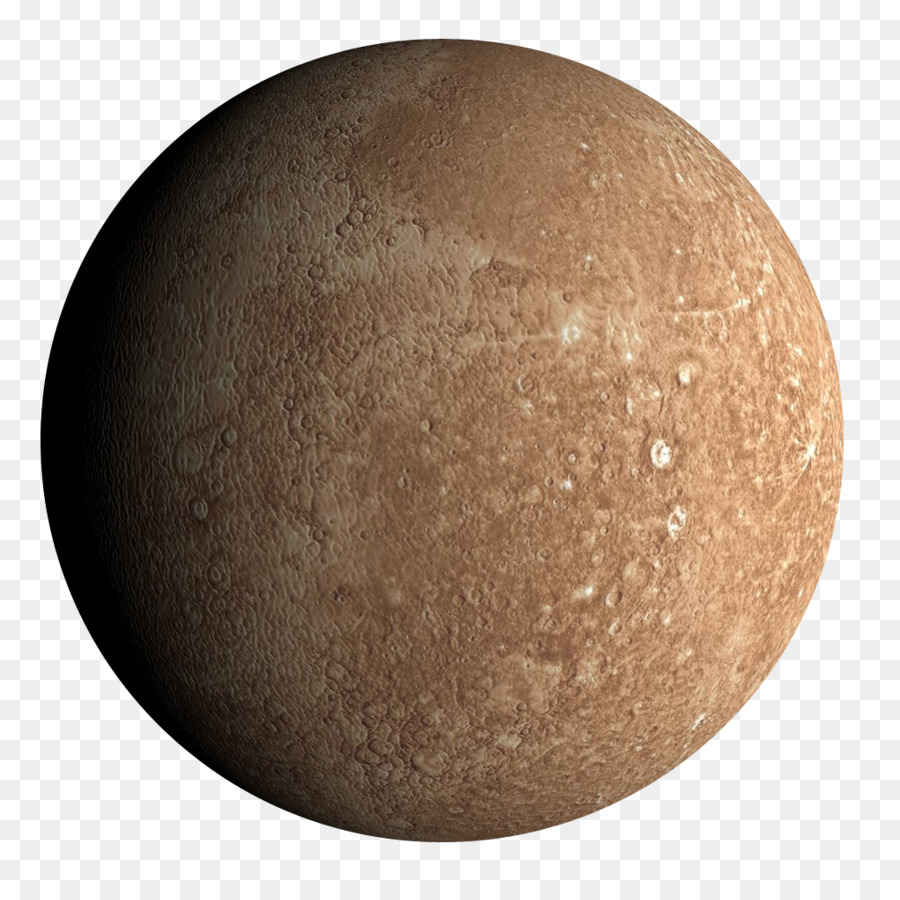
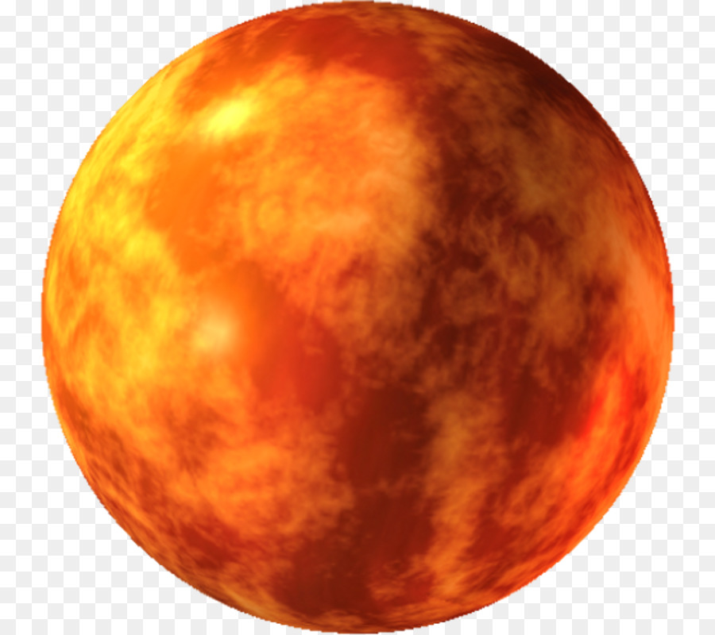
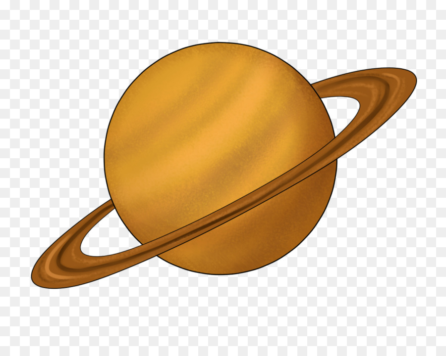
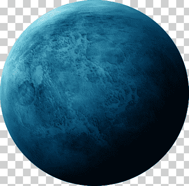
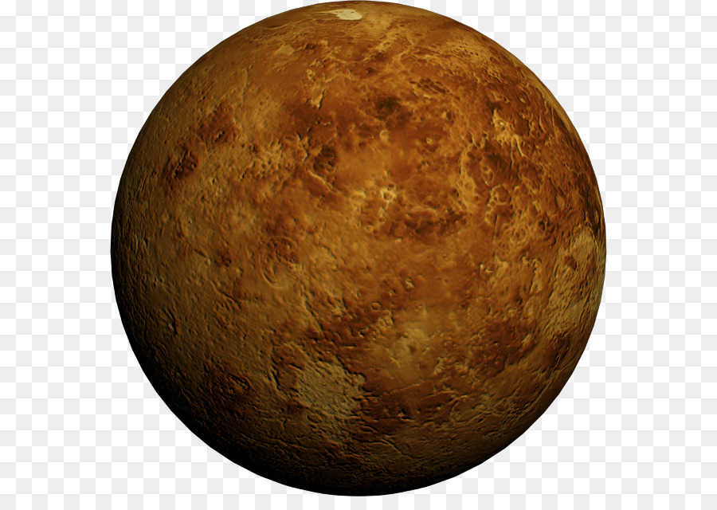

tierra
Características

Inclinación 8,004 °
Argumento del periastro 31,124°
Velocidad orbital media 49,8725 km/s
Mercurio |
Características |
|  |
Inclinación 7,004 ° Argumento del periastro 29,124° Velocidad orbital media 47,8725 km/s |
marte |
Características |
|  |
Inclinación 9,004 ° Argumento del periastro 39,124° Velocidad orbital media 45,8725 km/s |
neptuno |
Características |
|
Inclinación 5,004 ° Argumento del periastro 32,124° Velocidad orbital media 45,8725 km/s |
pluton |
Características |
|
Inclinación 5,004 ° Argumento del periastro 26,124° Velocidad orbital media 57,8725 km/s |
saturno |
Características |
|  |
Inclinación 7,604 ° Argumento del periastro 31,124° Velocidad orbital media 48,8725 km/s |
tierra |
Características |
|
Inclinación 8,004 ° Argumento del periastro 31,124° Velocidad orbital media 49,8725 km/s |
urano |
Características |
|  |
Inclinación 6,004 ° Argumento del periastro 40,124° Velocidad orbital media 50,8725 km/s |
venus |
Características |
|  |
Inclinación 6,004 ° Argumento del periastro 43,124° Velocidad orbital media 45,8725 km/s |
Venus |
Características |
|
Inclinación 6,004 ° Argumento del periastro 34,124° Velocidad orbital media 48,8725 km/s |